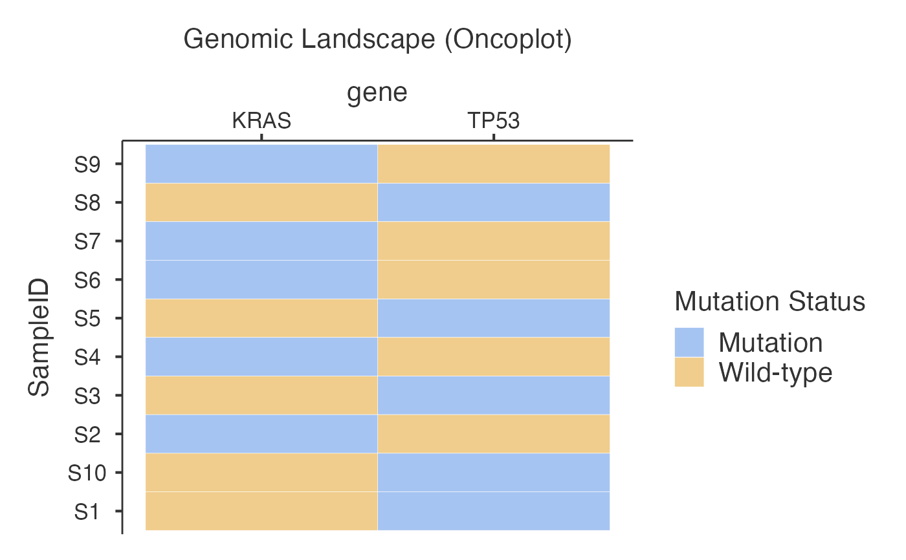

Creates oncoplots (mutation landscapes) to visualize genomic alterations across genes and samples with optional clinical annotations
Super classes
jmvcore::Analysis -> jjoncoplotBase -> jjoncoplotClass
Methods
Inherited methods
jmvcore::Analysis$.createImage()jmvcore::Analysis$.createImages()jmvcore::Analysis$.createPlotObject()jmvcore::Analysis$.getSessionTemp()jmvcore::Analysis$.load()jmvcore::Analysis$.render()jmvcore::Analysis$.save()jmvcore::Analysis$.savePart()jmvcore::Analysis$.setCheckpoint()jmvcore::Analysis$.setParent()jmvcore::Analysis$.setReadDatasetHeaderSource()jmvcore::Analysis$.setReadDatasetSource()jmvcore::Analysis$.setResourcesPathSource()jmvcore::Analysis$.setStatePathSource()jmvcore::Analysis$addAddon()jmvcore::Analysis$asProtoBuf()jmvcore::Analysis$asSource()jmvcore::Analysis$check()jmvcore::Analysis$init()jmvcore::Analysis$optionsChangedHandler()jmvcore::Analysis$postInit()jmvcore::Analysis$print()jmvcore::Analysis$readDataset()jmvcore::Analysis$run()jmvcore::Analysis$serialize()jmvcore::Analysis$setError()jmvcore::Analysis$setStatus()jmvcore::Analysis$translate()jjoncoplotBase$initialize()
Examples
data <- data.frame(
SampleID = paste0("S", 1:10),
TP53 = c(1, 0, 1, 0, 1, 0, 0, 1, 0, 1),
KRAS = c(0, 1, 0, 1, 0, 1, 1, 0, 1, 0)
)
jjoncoplot(data, "SampleID", c("TP53", "KRAS"))
#>
#> GENOMIC LANDSCAPE VISUALIZATION
#> Hierarchical Sorting
#> Hierarchical sorting algorithm applied: Samples are ordered using ggoncoplot's base-2 exponential weighting based on gene frequency rank. Most frequently mutated genes contribute exponentially more weight (2^rank) to sample ordering, creating intuitive visual patterns.
#>
#> Gene Selection Method
#> Gene selection: Displaying top 10 most frequently mutated genes from your dataset (2 total gene variables). Use "Specific Genes to Include" to focus on genes of clinical interest.
#> <div style='background-color: #f8f9fa; border-radius: 8px; padding:
#> 15px; margin: 10px 0;'>
#> <h3 style='color: #2c3e50; margin-top: 0;'> Genomic Landscape
#> Visualization for Clinical Research
#>
#> <div style='background-color: #e8f4fd; border-left: 4px solid #3498db;
#> padding: 10px; margin: 10px 0;'>
#> <h4 style='color: #2980b9; margin-top: 0;'> Clinical Applications
#>
#> Oncoplots help pathologists and oncologists visualize mutation
#> landscapes across cancer samples to:
#>
#> <ul style='margin-bottom: 5px;'>
#> Identify Driver Mutations: Frequently mutated genes (e.g., TP53, KRAS)
#> driving cancer progression
#> Discover Therapeutic Targets: Actionable mutations for precision
#> medicine and targeted therapy
#> Analyze Mutation Patterns: Co-occurring vs mutually exclusive
#> alterations indicating pathway dependencies
#> Assess Tumor Mutation Burden (TMB): High TMB may predict immunotherapy
#> response
#> Stratify Patients: Group patients by molecular profiles for clinical
#> trials
#>
#>
#>
#> <div style='background-color: #fff3cd; border-left: 4px solid #f39c12;
#> padding: 10px; margin: 10px 0;'>
#> <h4 style='color: #e67e22; margin-top: 0;'> When to Use This Analysis
#>
#> <ul style='margin-bottom: 5px;'>
#> Tumor Profiling: Characterizing mutation landscapes in cancer cohorts
#> Biomarker Discovery: Identifying prognostic or predictive molecular
#> markers
#> Clinical Trial Design: Patient stratification based on genomic
#> profiles
#> Pathway Analysis: Understanding oncogenic pathway alterations
#> Therapeutic Planning: Matching patients to targeted therapies
#>
#>
#>
#> <div style='background-color: #d4edda; border-left: 4px solid #28a745;
#> padding: 10px; margin: 10px 0;'>
#> <h4 style='color: #27ae60; margin-top: 0;'> Data Requirements
#>
#> <ul style='margin-bottom: 5px;'>
#> Sample ID: Patient/tumor identifiers (e.g., TCGA-AA-3818, P001)
#> Gene Variables: Binary mutation status (0 = wild-type, 1 = mutated)
#> Clinical Data: Age, stage, grade, treatment response (optional)
#> Mutation Types: SNV, CNV, Indel classifications (optional)
#>
#>
#>
#> <div style='background-color: #f8d7da; border-left: 4px solid #dc3545;
#> padding: 10px; margin: 10px 0;'>
#> <h4 style='color: #c0392b; margin-top: 0;'> Important Considerations
#>
#> <ul style='margin-bottom: 5px;'>
#> Sample Size: Minimum 10 samples recommended for meaningful patterns
#> Data Quality: Ensure consistent mutation calling and annotation
#> Clinical Context: Consider tumor type, stage, and treatment history
#> Statistical Power: Larger cohorts needed for rare mutation analysis
#>
#>
#>
#>
#>
#> <div style='padding: 15px; background-color: #f8f9fa; border-radius:
#> 8px; margin: 10px 0;'><p style='color: #28a745; margin: 5px 0;'>
#> Sample ID Variable: SampleID selected
#>
#> <p style='color: #28a745; margin: 5px 0;'> Gene Variables: 2 genes
#> selected
#>
#> <div style='background-color: #d4edda; padding: 10px; border-radius:
#> 4px; margin-top: 15px;'><h4 style='color: #155724; margin-top: 0;'>
#> Ready for Analysis!
#>
#> <p style='margin: 5px 0; color: #155724;'>Minimum requirements met.
#> The oncoplot will appear below.
#>
#> Mutation Summary
#> ──────────────────────────────────────────────────────────────────────────────────────
#> Gene Mutated Samples Total Samples Mutation Frequency Most Common Type
#> ──────────────────────────────────────────────────────────────────────────────────────
#> TP53 5 10 50.00000 SNV
#> KRAS 5 10 50.00000 SNV
#> ──────────────────────────────────────────────────────────────────────────────────────
#>
#>
#> Per-sample Mutation Burden
#> ──────────────────────────────────────────────────
#> Sample ID Total Mutations Log10(TMB + 1)
#> ──────────────────────────────────────────────────
#> ──────────────────────────────────────────────────
#>
#>
#> Plot Information
#> ─────────────────────────────
#> Parameter Value
#> ─────────────────────────────
#> Total Samples 10
#> Total Genes 2
#> Plot Type oncoplot
#> Color Scheme default
#> Width 800
#> Height 600
#> ─────────────────────────────
#>
#>
#> <div style='background-color: #f8f9fa; border-radius: 8px; padding:
#> 15px; margin: 15px 0;'>
#> <h3 style='color: #2c3e50; margin-top: 0;'> Clinical Interpretation
#>
#> <div style='background-color: #e8f4fd; border-left: 4px solid #3498db;
#> padding: 10px; margin: 10px 0;'>
#> <h4 style='color: #2980b9; margin-top: 0;'> Most Frequently Mutated
#> Genes
#>
#> <ul style='margin-bottom: 5px;'>
#> TP53: 5/10 samples (50%) - Guardian of genome, tumor suppressor
#> frequently mutated in cancer
#> KRAS: 5/10 samples (50%) - Oncogene driving cell proliferation,
#> therapeutic target in multiple cancers
#>
#> <div style='background-color: #fff3cd; border-left: 4px solid #ffc107;
#> padding: 10px; margin: 10px 0;'>
#> <h4 style='color: #856404; margin-top: 0;'> Clinical Recommendations
#>
#> Actionable mutations detected: KRAS
#>
#> • Consider targeted therapy options and clinical trial eligibility
#>
#> • Review FDA-approved drugs and companion diagnostics
#>
#> Mutation co-occurrence analysis recommended:
#>
#> • Use co-occurrence plot to identify mutually exclusive or concurrent
#> mutations
#>
#> • Consider pathway analysis for therapeutic strategy
#>
#> <div style='background-color: #f3e5f5; border-left: 4px solid #9c27b0;
#> padding: 10px; margin: 10px 0;'>
#> <h4 style='color: #7b1fa2; margin-top: 0;'> Sample Stratification
#> Insights
#>
#> Sample size: 10 samples analyzed
#>
#> Limited power - findings should be validated in larger cohorts
#>
#> <div style='background-color: #f8f9fa; border: 1px solid #dee2e6;
#> border-radius: 8px; padding: 20px; margin: 15px 0;'>
#> <h3 style='color: #2c3e50; margin-top: 0; border-bottom: 2px solid
#> #3498db; padding-bottom: 10px;'> Clinical Summary for Reports
#>
#> <div style='background-color: white; padding: 15px; border-radius:
#> 5px; border-left: 4px solid #28a745;'>
#> <p style='margin-bottom: 15px; font-weight: bold; color:
#> #28a745;'>Copy-Ready Summary Text:
#>
#> <div style='font-family: Georgia, serif; line-height: 1.6; padding:
#> 10px; background-color: #f8f9fa; border-radius: 3px;'>
#>
#> Genomic Analysis Summary: Analysis of 10 samples revealed mutation
#> frequencies in key cancer-associated genes. TP53 was mutated in 5
#> samples (50%), KRAS was mutated in 5 samples (50%). Notably,
#> actionable mutations were identified in KRAS, which may inform
#> targeted therapy selection. These findings contribute to understanding
#> the genomic landscape and may inform precision medicine approaches.
#>
#> <div style='margin-top: 15px; padding: 10px; background-color:
#> #e9ecef; border-radius: 3px;'>
#> <p style='margin: 0; font-size: 0.9em; color: #6c757d;'>Methods Note:
#> Genomic landscape visualization was performed using oncoplot analysis
#> with mutation matrix visualization. Analysis included 2 genes across
#> 10 samples.
